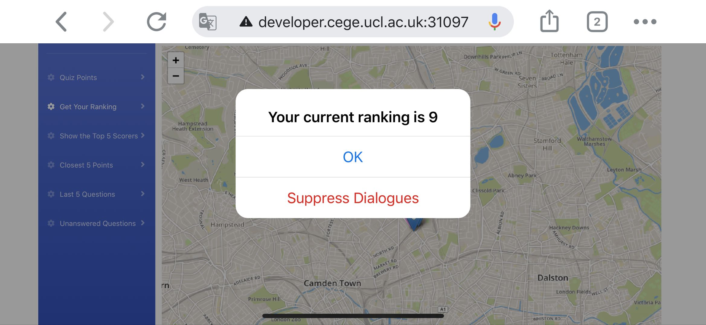
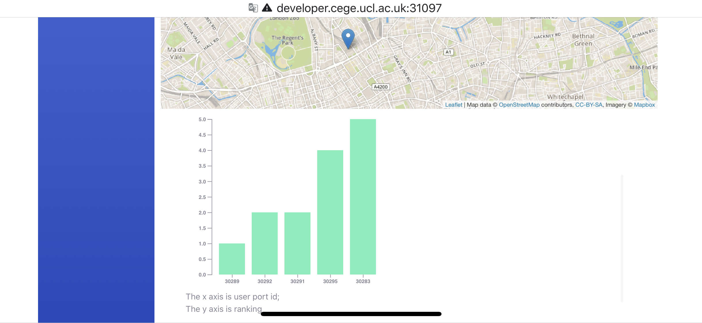

Firstly, confirm that you have connected to UCL Wi-Fi and then use your mobile phone to open the browser and enter the following link: https://developer.cege.ucl.ac.uk:31097/bootStrap.html. Then you will see the following interface on your phone screen (Figure 1).
Figure 1: All functions are displayed on the left in the form of a menu, the pink point in the middle of the map is the user's current location
After clicking the Quiz Points sub-menu Load Quiz Points, all quiz points will be displayed on the map with blue points. And the question form will pop up automatically when the position of the user is close to quiz points. User can select their answer by clicking the radio buttons. These points can be removed by clicking on the 'Remove Closest 5 Points'(Figure 2).
After user clicking the 'Submit Answer' button, the app will tell the user if their answer is correct or not (Figure 3) and how many answers they have answered correctly (Figure 4).

Figure 2: The automatically pop up question form

Figure 3: Alert window to tell the user if their answer is correct or not

Figure 4: Alert window to tell the user how many questions they have answered correctly
After the user submit their answer, the pop-up form will close and the colour of question point will change based on if their answer is correct (Figure 5).

Figure 5: Answer correct (Green); Answer incorrect (Red); Unanswered questions (Blue)
Clicking the 'Get Your Ranking' in the left menu and the system will automatically pop up an alert window to tell you the current ranking (Figure 6).

Figure 6: Alert window shows the user ranking
Clicking the 'Show the Top 5 Socers' in the left menu and then a graph will be shown at bottom of the webpage to show the top 5 socers (Figure 7).

Figure 7: Top 5 socers graph
After clicking the Closest 5 Points sub-menu 'Show Closest 5 Points', the 5 closest points will be displayed on the map with orange points. These points can be removed by clicking on the 'Remove Closest 5 Points'(Figure 8).
Figure 8: The closest 5 question points: Pink point(User Location); Orange points: (Closest 5 Points)
After clicking the Last 5 Points sub-menu 'Show Last 5 Points', the Last 5 points will be displayed on the map and the color of the point depends on whether it is correct the first time it is answered. These points can be removed by clicking on the 'Remove Last 5 Points'(Figure 9).
Figure 9: Red: wrong answer; Green: correct answer
After clicking the Unanswered Questions sub-menu 'Show Unanswered Q', the unanswered question points will be displayed on the map with blue colour. These points can be removed by clicking on the 'Remove Unanswered Q'. The question form will also pop-up automatically when the position of the user is close to quiz points (Figure 10).
Figure 10: Blue: Unanswered question points